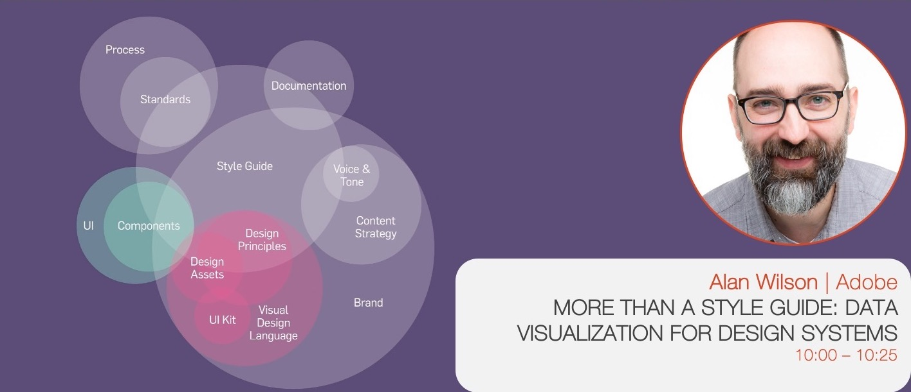
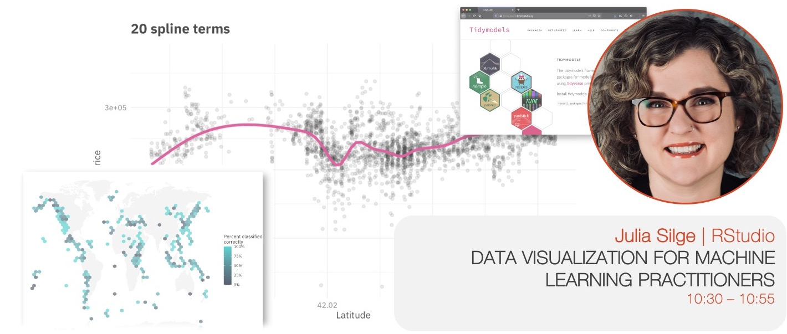
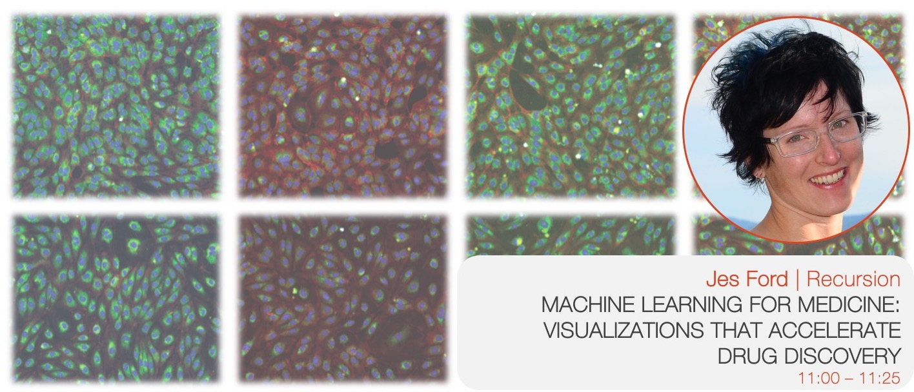
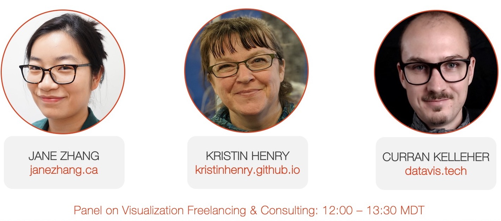
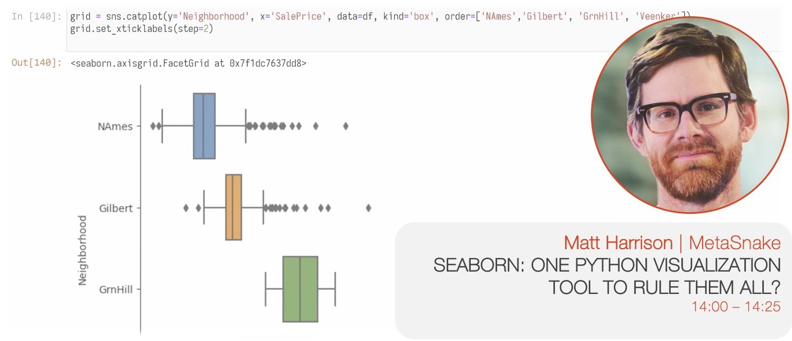
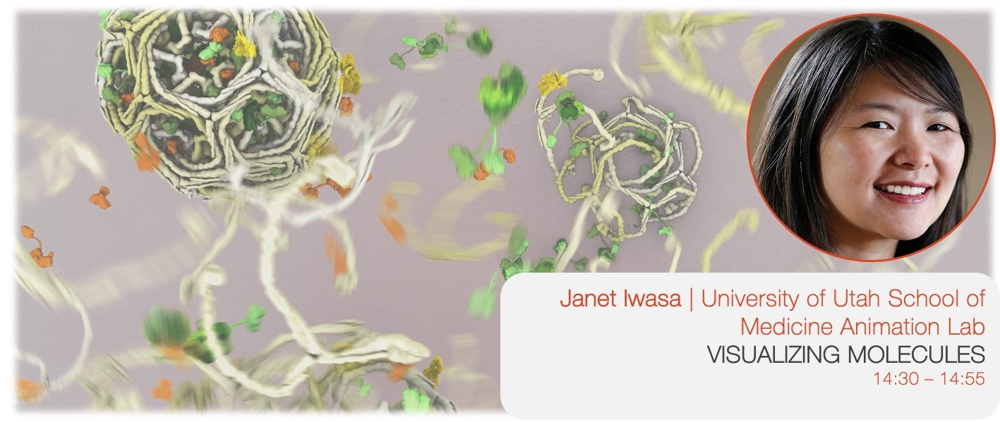
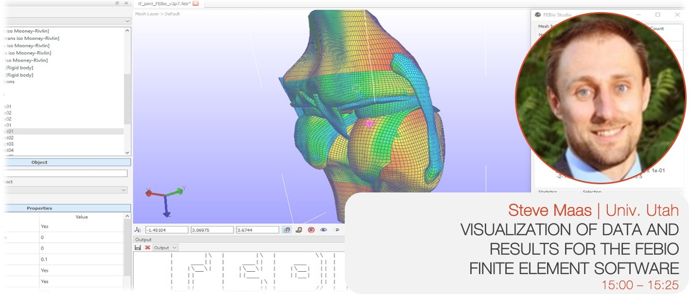

Monday, October 26 at IEEE VIS 2020
The VisInPractice 2020 program was dedicated to those interested in the practical aspects of data visualization and visual analytics. Unlike most other events at IEEE VIS, VisInPractice talks have no associated papers.
VisInPractice 2020 took place on Monday, October 26 at the VIS 2020 Conference, where it featured invited talks and a panel discussion with visualization practitioners. The VisInPractice program was livestreamed on YouTube and recorded (see below).
Click on a speaker to see their talk video and bio:
Session1 (10:00 - 11:30 MDT) – moderated by Sean McKenna
- Alan Wilson: More than a Style Guide: Data Visualization for Design Systems
- Julia Silge: Data Visualization for Machine Learning Practitioners
- Jes Ford: Machine Learning for Medicine: Visualizations that Accelerate Drug Discovery
Session 2 (12:00 - 13:30 MDT) – moderated by Matthew Brehmer and Zhicheng ‘Leo’ Liu
- Jane Zhang: How Self-Employed Data Visualizaiton Designers Make a Living
- Panel: Visualization Consulting & Freelancing with Jane Zhang, Kristin Henry, and Curran Kelleher
Session 3 (14:00 - 15:30 MDT) – moderated by Matt Larsen
- Matt Harrison: Seaborn: One Python Visualization Tool to Rule Them All?
- Janet Iwasa: Visualizing Molecules
- Steve Maas: Visualization of Data and Results for the FEBio Finite Element Software
Talk Descriptions
 SPEAKER: Alan Wilson (@alangwilson), Adobe
DESCRIPTION: After a brief introduction to design systems, Alan will share what he’s learned about creating data visualization guidelines and what we can do to make them better.
SPEAKER BIO: Alan started his career as a traditional graphic designer with a focus on brand and package. Over time he transitioned in UI and UX design. In 2011 he joined Adobe and got serious about data visualization design. Today he creates components, patterns, and guidelines for a wide range of Adobe Products, with a focus on Experience Cloud.
 SPEAKER: Julia Silge (@juliasilge), RStudio PBC
DESCRIPTION: Visual representations of data inform how machine learning practitioners think, understand, and decide. Before charts are ever used for outward communication about a ML system, they are used by the system designers and operators themselves as a tool to make better modeling choices. Practitioners use visualization, from very familiar statistical graphics to creative and less standard plots, at the points of most important human decisions when other ways to validate those decisions can be difficult. Visualization approaches are used to understand both the data that serves as input for machine learning and the models that practitioners create. In this talk, learn about the process of building a ML model in the real world, how and when practitioners use visualization to make more effective choices, and considerations for ML visualization tooling.
SPEAKER BIO: Julia Silge is a data scientist and software engineer at RStudio PBC where she works on open source modeling tools. She is both an international keynote speaker and a real-world practitioner focusing on data analysis and machine learning practice. She is the author of Text Mining with R with her coauthor David Robinson and Supervised Machine Learning for Text Analysis in R with her coauthor Emil Hvitfeldt. She loves text analysis, making beautiful charts, and communicating about technical topics with diverse audiences.
 SPEAKER: Jes Ford, Recursion
DESCRIPTION: Recursion is a digital biology company with a 4PB (and growing) dataset of images of human cells under various conditions. We are combining automation and data science to find new treatments for diseases, blurring the lines between traditional biology and technology. Visualization is an important tool for us to make sense of this enormous amount of high dimensional phenomic data. In this talk I’ll walk through some of the visualizations we use throughout the drug discovery process: from handling raw images to unique strategies for making results from 1024-dimensional drug screens sensible on a 2-dimensional display, from assessing machine learning models to compound liabilities. Along the way I’ll share some findings from the Recursion Cellular Image Classification challenge, a machine learning competition which was hosted on kaggle last year.
SPEAKER BIO: Jes Ford is a sponsored snowboarder turned astrophysicist turned data scientist. She enjoys applying Python data science tools to a wide variety of problems, and teaching skills and best practices to others. Jes currently works as a Senior Data Scientist at Recursion in Salt Lake City, where she also organizes the local Women in Data Science Conference and the Salt Lake PyLadies chapter, and spends her free time exploring the Wasatch mountains.
 PANELISTS: Jane Zhang (@janezhgw), Kristin Henry (@KristinHenry), and Curran Kelleher (@currankelleher)
DESCRIPTION: We’ve enlisted three practitioners who can speak to the topic of visualization consulting and freelancing, on getting started and the types of challenges one faces. Some of the topics we may discuss include getting established as a freelancer / consultant, differences from other roles within organizations or academic institutions, making ends meet, types of projects, finding and attracting clients and balancing projects, and pitfalls to avoid.
The panel will be prefaced with a screening of Jane’s pre-recorded talk “How Self-Employed Data Visualizaiton Designers Make a Living”, which was based on her Nightingale article of the same name. Jane spoke to 4 designers to understand how they are building their careers and how they make their income from dataviz. In this talk, Jane expands on her article and add more insights and talk about things she’s implemented since writing the article.
PANELIST BIOS:
Jane Zhang (@janezhgw) is an independent Data Visualization Designer from Toronto, Canada. Jane designs learning experiences that is driven by user-centred design. Her work shows people how to think about something by compartmentalizing information. As an independent, Jane shares her journey and experiences navigating the business through her articles on the Nightingale publication and her newsletter The Wanderings of a Dataviz Designer.
Kristin Henry (@KristinHenry) is an independent researcher and consultant based in San Francisco, specializing in data analytics and custom data visualizations. She spends most of her coding time switching back and forth between javascript and python. In Kristin’s spare time, she finds artistic inspiration in science and mathematics and creates generative art with code, data, and ink.
Curran Kelleher (@currankelleher) is passionate about data visualization, data exploration, interactive graphics and Open Source. Specializing in design and development of interactive data visualizations for the Web. Lead Design Technologist @ Stamen Design. Previously an independent 100% remote consultant for 4 years while living in India. Adjunct Professor teaching an online Data Visualization graduate course at Worcester Polytechnic Institute.
 SPEAKER: Matt Harrison (@mharrison), MetaSnake
DESCRIPTION: Python has many plotting tools, each with pros and cons. It would be nice if there was a single library to do it all. This talk will discuss the pros and cons of Seaborn. Is it the one tool that does it all?
SPEAKER BIO: Matt teaches large organizations on how to leverage Python and Data Science at MetaSnake. He authored Machine Learning Pocket Reference, Pandas 1.x Cookbook, and Illustrated Guide to Learning Python3 among other books. He also teaches for Stanford Continuing Studies.
 SPEAKER: Janet Iwasa (@janetiwasa), University of Utah School of Medicine Animation Lab
DESCRIPTION: Life as we know it relies on the constant tireless work of tiny molecular machines. My work focuses on creating animations and illustrations of how these machines are hypothesized to operate, based on a variety of data collected by molecular biologists. In this talk, I’ll discuss the process of creating molecular animations, how these visualizations help researchers better understand and communicate hypotheses, and share a few past and current projects.
SPEAKER BIO: Janet Iwasa is an assistant professor in the Biochemistry Department at the University of Utah. Her broad goal is to create accurate and compelling molecular visualizations and visualization tools that will support research, learning and scientific communication.
 SPEAKER: Steve Maas, University of Utah Musculoskeletal Research Labs
DESCRIPTION: FEBio is a finite element software designed for solving problems in computational biomechanics and biophysics. It can be used to solve problems in nonlinear structural mechanics, chemical reaction-diffusion, fluid mechanics, fluid-solid interactions, heat transfer, and more. In FEBio, the main focus is the implementation of constitutive models and modeling scenarios that are of particular interest to the biomechanics/biophysics research communities. FEBio, which is a command-line solver, is supported by FEBio Studio, which provides a graphical user interface to many of FEBio’s features and allows users to setup their models, run FEBio, and visualize their results. FEBio Studio uses OpenGL for rendering and we developed many custom visualization algorithms for displaying FE results, including contour plots, vector plots, tensor plots, streamline plots, particle flow visualizations, and more.
In our most recent release of FEBio, we have greatly expanded the software’s ability to represent heterogeneous model parameters, which is becoming an increasingly important aspect of computational modeling in biomechanics. This can be used, for instance, to model spatially varying material parameters, material anisotropy, and inhomogeneous boundary conditions or loads. This has posed challenges on both the FEBio solver side, as well as on the FEBio Studio side. In FEBio, various data structures were implemented that allow a variety of data representations over a finite element mesh: Data can be defined for nodes, elements, edges, or surface facets; Different levels of continuity across element and domain boundaries can be chosen. Various data representations can be converted between different formats (E.g. element data can be projected onto nodes). We are also working on mapping these various data representations between meshes to pave the path for doing adaptive mesh refinement in FEBio. On the FEBio Studio side, we are still working on supporting many of these new FEBio features, and many of the current development efforts revolve around how to best present these capabilities to the user. The challenges are not only related to how to best define spatially varying data from a user’s perspective, but also in how to best visualize the data for verification purposes. In addition, spatially varying data often comes from images, so we are also working on integrating support for visualizing images and mapping image data onto the finite element mesh. Finally, since FEBio is a command line solver, communication with FEBio goes through different file formats. We use an xml-based input format, and a custom, binary output format for storing results. These file formats have been updated to support the many new data formats that are supported in FEBio.
SPEAKER BIO: Dr. Steve Maas is a research associate at the University of Utah. He has developed, along with Dr. Jeffrey Weiss (University of Utah), and Dr. Gerard Ateshian (Columbia University) the FEBio software, a finite element software package for applications in computational biomechanics and biophysics. He has also developed FEBio’s supporting software packages, including the new FEBio flagship, called FEBio Studio.